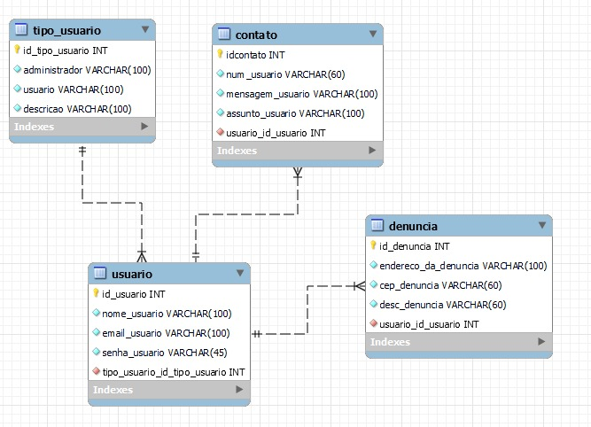
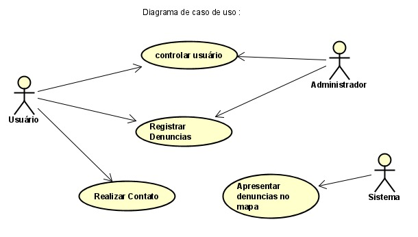

Sobre mim
tenho 17 anos estou cursando o último ano do ensino médio,também estou fazendo curso de técnico para internet na instituição Marista Acácio. também ja fiz cursos de digitação e designer na instituição Sesc. Eu sou uma pessoa bem tranquila não muito comunicativa mais estou pondo isso em prática,estou aprendendo a trabalhar em equipe,estou aprendendo a ser mais comunicativa pois não sou muito mais ja estou trbalhando nisso.
Experiencias
- Admistração de diagrama de caso de uso
- Documentação
- Engenharia de Software
CURSOS
- Designer
- digitação
- Introdução de Inkscape
- Curso do programa menor aprendiz
PROJETOS
Tabela DER
Diagrama de caso de uso
CONTATO
- Telefone:(43) 999554758
- Email:nathallylorelay13@gmail.com
- Endereço: rua Manoel Alves de Oliveira
- Cidade:Londrina Estado:Paraná